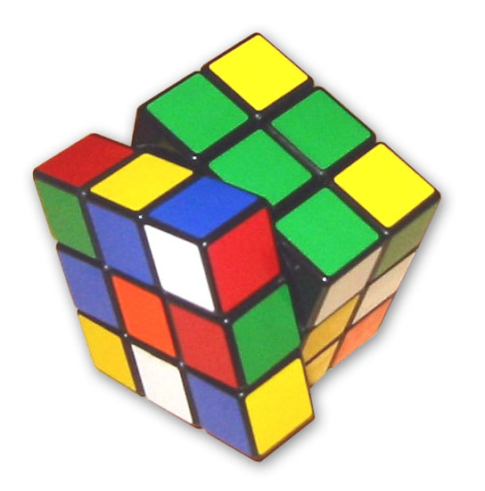

Кубик рубика
механическая головоломка, изобретённая в 1974 году венгерским скульптором и преподавателем архитектуры Эрнё Рубиком. Головоломка представляет собой пластмассовый куб 3×3×3 с 54 видимыми цветными наклейками. Грани большого куба способны вращаться вокруг 3 внутренних осей куба Люди, увлекающиеся скоростной сборкой кубика Рубика, называются спидкуберами. А сама скоростная сборка — спидкубинг (англ. speedcubing).
На данный момент одним из самых популярных методов скоростной сборки является метод Джессики Фридрих[8][9]. Более продвинутые спидкуберы изучают алгоритмы ZBLL, объединяющие 2 этапа сборки последнего слоя в один.
Официальные соревнования по скоростной сборке кубика Рубика регулярно проводятся Всемирной ассоциацией спидкубинга[en](WCA). Каждые 2 года проходят чемпионаты Европы, Азии, а так же чемпионат мира.
Согласно правилам WCA, перед сборкой кубы должны быть перемешаны по алгоритму (scramble), сгенерированному компьютером с помощью программы TNoodle (для куба 3×3×3, для других головоломок есть отдельные программы генерации скрамблов). При этом у всех участников начальные позиции перемешанного кубика (скрамблы) должны быть одинаковыми.
Победитель определяется не по результату единичной сборки, а по среднему времени из 5 попыток, при этом лучшая и худшая попытки не учитываются, а вычисляется среднее из оставшихся трёх. Однако в других дисциплинах могут использоваться и другие варианты: среднее из 3 (например, для куба 7×7×7), лучшее из 3 (сборка вслепую).
Кто нажмет тот лох
↓ ↓
Википедия-сайт
